DEEP TIME LAB
Every plate-tectonic event in GEOLOGY › DEEP TIME, in the storylines it belongs to: the globe as the site shows it on that event’s frame (where it happened, on the plate model’s own boundaries) and its cross-section, running live. The figures marked ≈ are rough reconstructions. Built by _maplab/deeptime_lab_build.py from index.html.
PROPOSED: SHOWING THE SCALE AND IMPORTANCE
- BUILT 2026-11-13: ALL FIVE BELOW ARE LIVE IN DEEP TIME.
- THEN AND NOW, TO SCALE A height ruler in each cross-section: the range at its height (≈, sourced where a height is published, labelled NOT MEASURED where none is) against what is left today (Mt Mitchell 2,037 m) and Everest for reference. The worn-down stump is the point.
- ITS FOOTPRINT ON THE GLOBE Light the whole belt along the model’s boundary, not a dot, with its length (≈ km) and a familiar modern range drawn to the same scale beside it.
- HOW LONG IT TOOK A duration bar on the timeline (Taconic ≈ 30 Myr, Alleghanian ≈ 65 Myr): mountain building is slow, the frame is a snapshot of it.
- WHERE YOU CAN STAND ON IT The rock in New York each event made: Fordham gneiss (Grenville), Inwood marble (Iapetus coast), Manhattan schist and Cameron’s Line (Taconic), the Palisades (Newark). Tap through to THE ROCK map at that spot.
- STORYLINES PLAY a chain in order -- the Appalachians’ seven steps -- with a progress strip, each scene handing over to the next, the globe following the place.
THE APPALACHIANS: AN OCEAN OPENS AND CLOSES (A WILSON CYCLE)
The range was built in three collisions, on rock from a fourth, then torn by the rift that opened the Atlantic. New York stands on every stage.
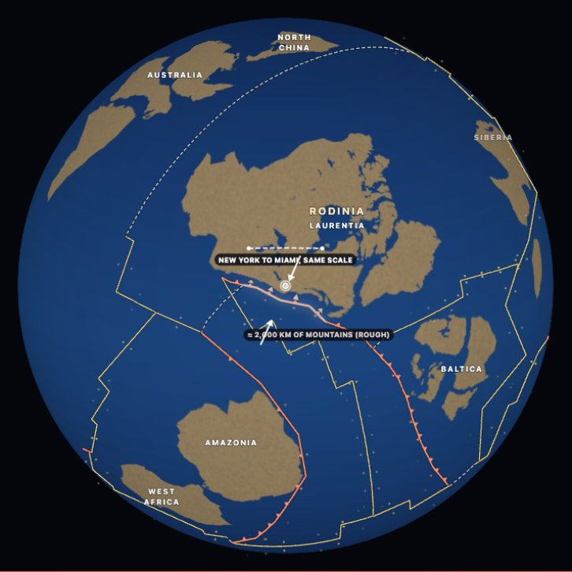
GRENVILLE OROGENYMOUNTAINS · 1.1 BILLION YEARS AGO · LASTED 1,250-980 MaThe collision that builds Rodinia raises a range through what is now New York and the Adirondacks.
- AT ITS HEIGHT
- a plateau ≈ 3-5 km (Rivers 2012)
- TODAY
- Mt Marcy, Adirondacks, 1,629 m (a young uplift of old rock)
- NEW YORK
- The Fordham gneiss of the Bronx and the bedrock under the boroughs is Grenville crust.
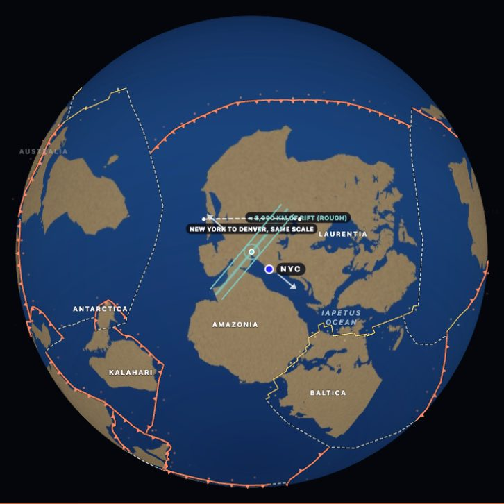
THE IAPETUS OCEAN OPENSRIFT · 600 MILLION YEARS AGO · LASTED 615-550 MaLaurentia pulls away from Baltica and Amazonia; the ocean that the Appalachians will later close.
- TODAY
- the old coastline is buried under the Appalachians
- NEW YORK
- The Inwood marble (Inwood Hill, Marble Hill) is limestone from this new coast’s shallow sea floor.
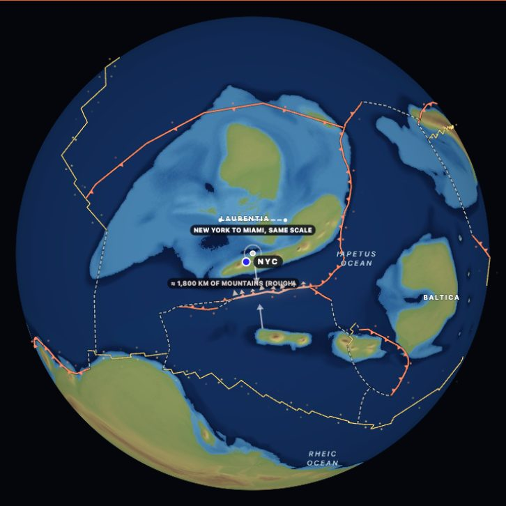
TACONIC OROGENYMOUNTAINS · 450 MILLION YEARS AGO · LASTED 490-445 MaAn island arc hits Laurentia: the first Appalachians.
- AT ITS HEIGHT
- not measured
- TODAY
- Mt Equinox, Taconic Range, 1,163 m
- NEW YORK
- Manhattan schist and Cameron’s Line -- a Taconic fault, long read as the suture where the arc was welded on -- run through Manhattan and the Bronx.
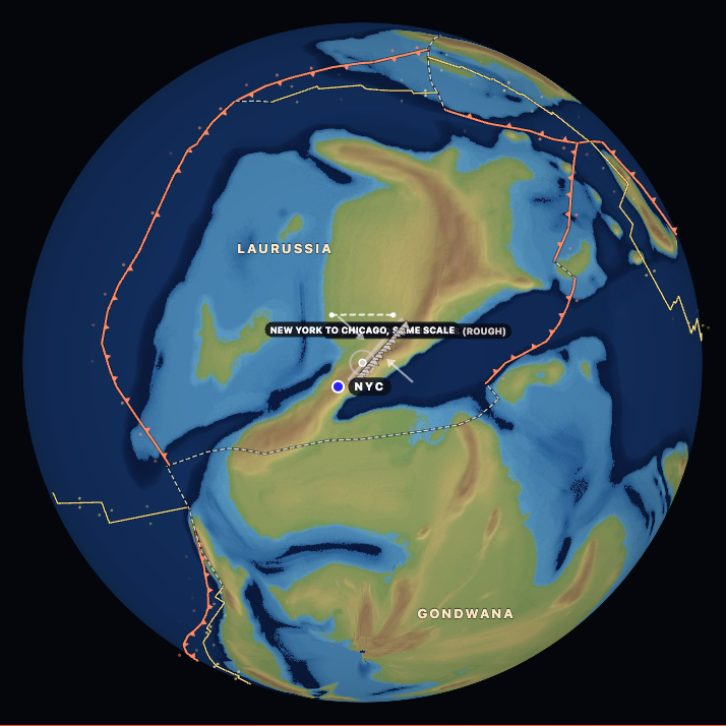
ACADIAN OROGENYMOUNTAINS · 375 MILLION YEARS AGO · LASTED 421-350 MaAvalonia docks; the northern Appalachians rise again.
- AT ITS HEIGHT
- a plateau ≈ 5 km (Hillenbrand & Williams 2021)
- TODAY
- Mt Washington, 1,917 m
- NEW YORK
- New England’s granites and the Catskills (the sediment shed off this range).
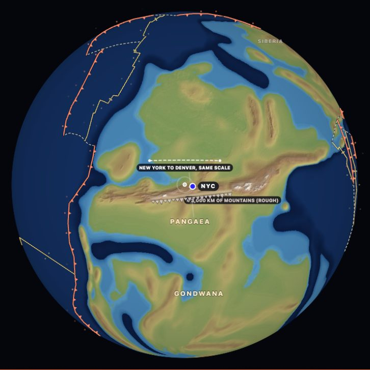
ALLEGHANIAN AND VARISCAN OROGENIESMOUNTAINS · 300 MILLION YEARS AGO · LASTED 325-260 MaGondwana meets Laurussia; the Appalachians rise a last time as Pangaea assembles.
- AT ITS HEIGHT
- ≈ 3-4 km (Variscan: Dusséaux 2021)
- TODAY
- Mt Mitchell, 2,037 m: the Appalachians’ highest today
- NEW YORK
- The last collision that finished Pangaea; New York sat in its interior.
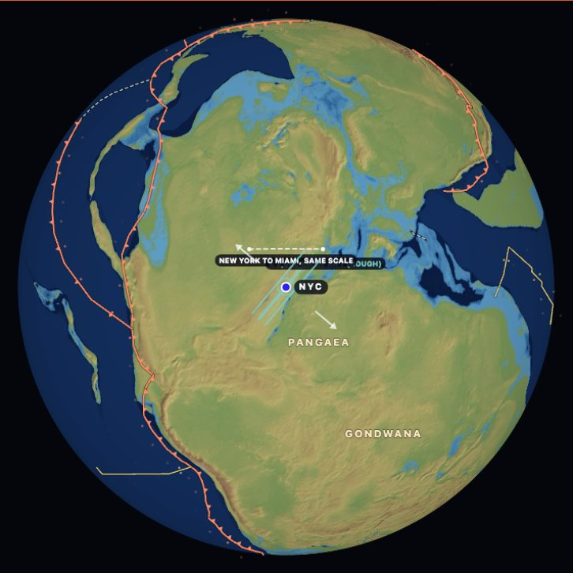
THE NEWARK RIFT AND THE PALISADESRIFT · 215 MILLION YEARS AGO · LASTED 230-195 MaPangaea starts to tear along the coast; molten rock cools into the Palisades cliffs across the Hudson from New York.
- TODAY
- Palisades cliffs, 160 m, across the Hudson
- NEW YORK
- The Palisades are the sill itself, seen from Riverside Drive.
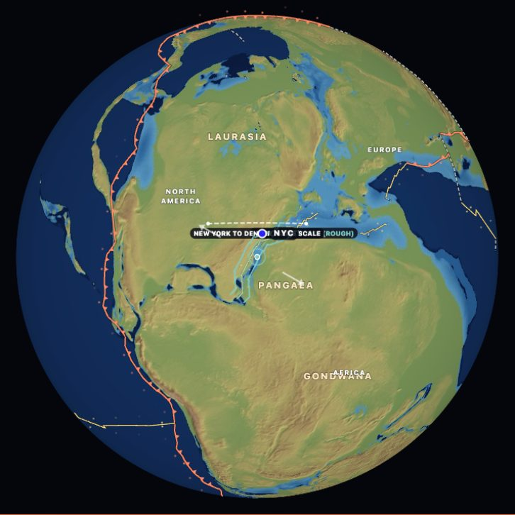
THE ATLANTIC OPENSRIFT · 180 MILLION YEARS AGO · LASTED 200 Ma-todayNorth America pulls away from Africa and new ocean floor spreads between them, as it still does.
- TODAY
- the Mid-Atlantic Ridge, still spreading ≈ 2.5 cm a year
- NEW YORK
- New York’s harbor and continental shelf sit on the margin this opening left.
PANGAEA ASSEMBLES
Several collisions on several coasts at once close Iapetus and the Rheic Ocean into one supercontinent.
TACONIC OROGENYMOUNTAINS · 450 MILLION YEARS AGO · LASTED 490-445 MaAn island arc hits Laurentia: the first Appalachians.
- AT ITS HEIGHT
- not measured
- TODAY
- Mt Equinox, Taconic Range, 1,163 m
- NEW YORK
- Manhattan schist and Cameron’s Line -- a Taconic fault, long read as the suture where the arc was welded on -- run through Manhattan and the Bronx.
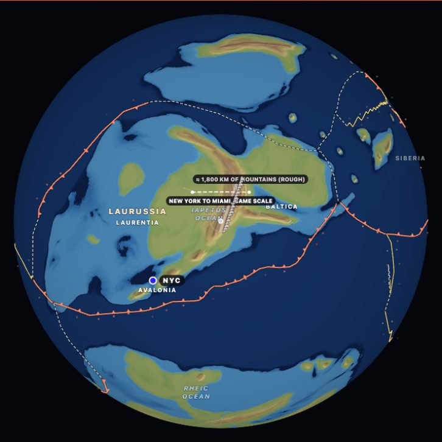
CALEDONIAN OROGENYMOUNTAINS · 420 MILLION YEARS AGO · LASTED 490-390 MaLaurentia and Baltica close the Iapetus Ocean; Scotland to Norway.
- AT ITS HEIGHT
- not measured (Himalaya-scale shortening)
- TODAY
- Ben Nevis, Scotland, 1,345 m
- NEW YORK
- The same belt as the Appalachians, continued across what became the Atlantic: Newfoundland, Ireland, Scotland, Norway.
ACADIAN OROGENYMOUNTAINS · 375 MILLION YEARS AGO · LASTED 421-350 MaAvalonia docks; the northern Appalachians rise again.
- AT ITS HEIGHT
- a plateau ≈ 5 km (Hillenbrand & Williams 2021)
- TODAY
- Mt Washington, 1,917 m
- NEW YORK
- New England’s granites and the Catskills (the sediment shed off this range).
ALLEGHANIAN AND VARISCAN OROGENIESMOUNTAINS · 300 MILLION YEARS AGO · LASTED 325-260 MaGondwana meets Laurussia; the Appalachians rise a last time as Pangaea assembles.
- AT ITS HEIGHT
- ≈ 3-4 km (Variscan: Dusséaux 2021)
- TODAY
- Mt Mitchell, 2,037 m: the Appalachians’ highest today
- NEW YORK
- The last collision that finished Pangaea; New York sat in its interior.
THE ALPINE-HIMALAYAN BELT
Pieces of Gondwana cross the Tethys one after another; Africa and India close it from the south. Still going.
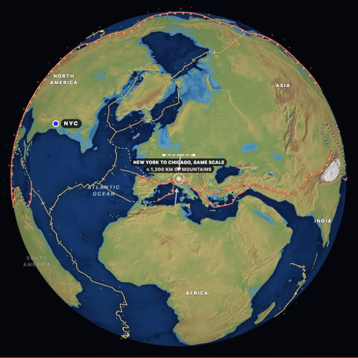
ALPINE OROGENYMOUNTAINS · 35 MILLION YEARS AGO · LASTED 35 Ma-todayAfrica pushes into Europe; the Alps rise.
- AT ITS HEIGHT
- still rising
- TODAY
- Mont Blanc, 4,806 m
- NEW YORK
- The same belt as the Himalaya.
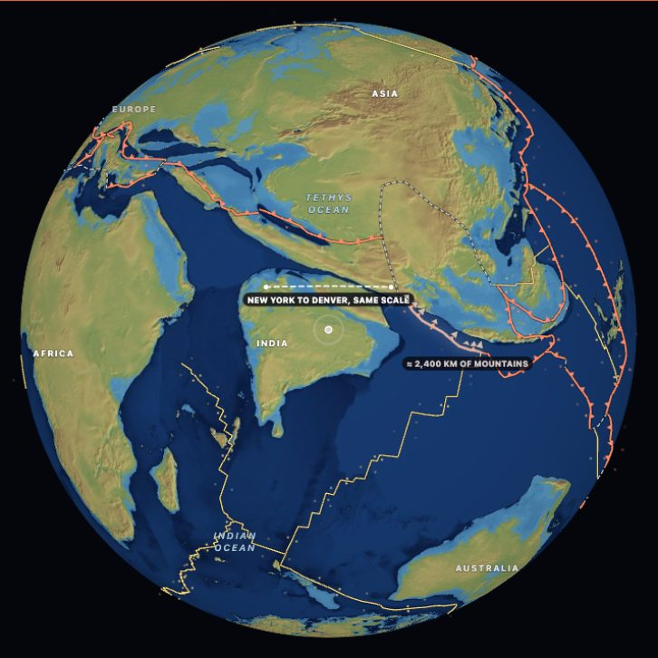
THE HIMALAYA BEGINMOUNTAINS · 50 MILLION YEARS AGO · LASTED 55 Ma-todayIndia meets Asia; the Tibetan plateau starts to rise.
- AT ITS HEIGHT
- still rising
- TODAY
- Everest, 8,849 m
- NEW YORK
- The modern example of what the Alleghanian Appalachians were.
THE OTHER EDGES
Rodinia tears open the Pacific side of North America; much later a flat slab raises the Rockies far inland.
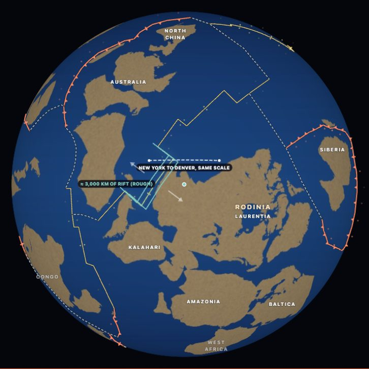
RODINIA BREAKS UPRIFT · 750 MILLION YEARS AGO · LASTED 780-540 MaRodinia tears apart along what becomes the western edge of North America; the Pacific side is born.
- TODAY
- the Pacific edge of North America begins
- NEW YORK
- Far from New York: the west coast of Laurentia.
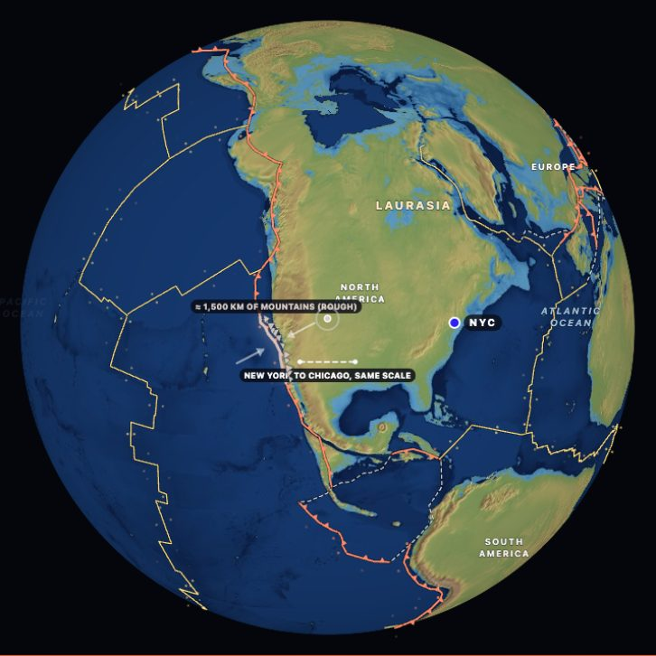
LARAMIDE OROGENYMOUNTAINS · 70 MILLION YEARS AGO · LASTED 80-50 MaThe Rocky Mountains rise far inland as a flat slab subducts under North America.
- TODAY
- Mt Elbert, 4,401 m
- NEW YORK
- The Rockies; New York is untouched.